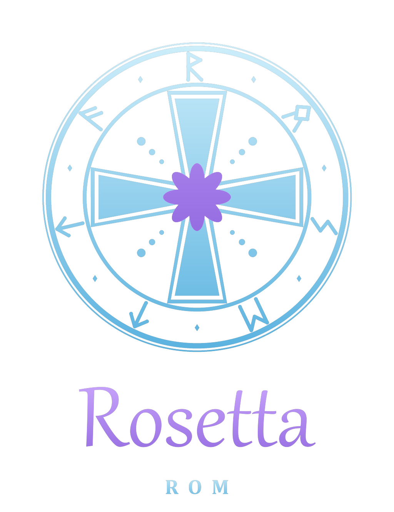
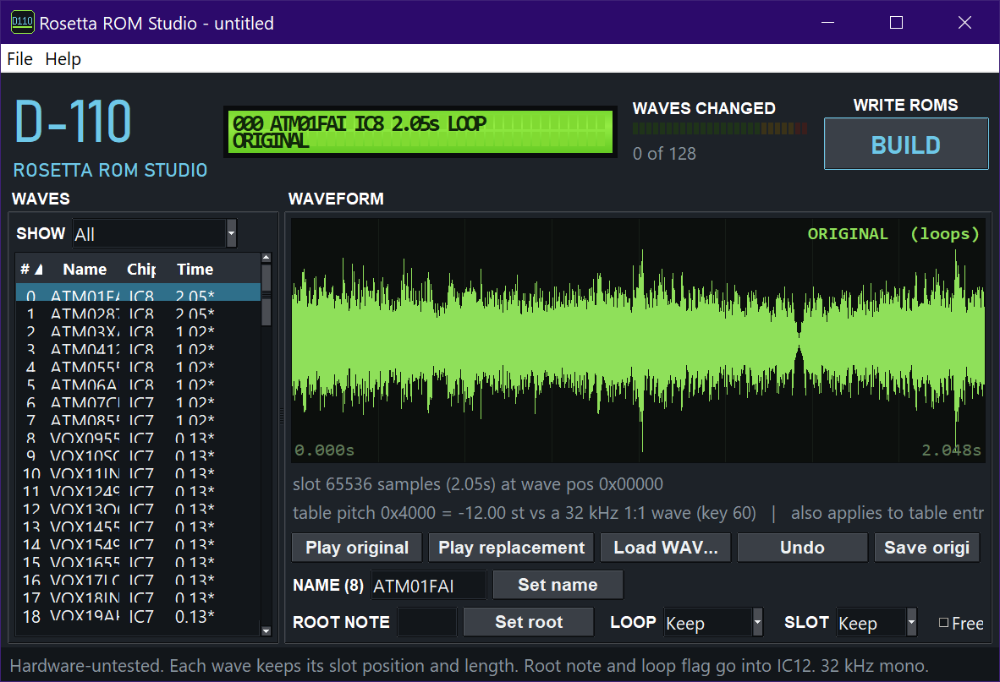
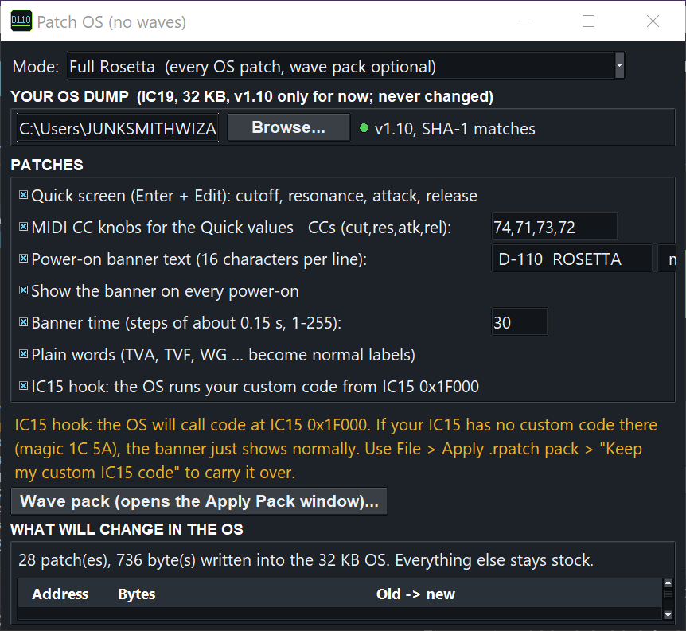

New firmware and your own sounds for the Roland D-110 (D110) LA synth module. Free, open source, and tested on a real D-110.
All of it runs from a new menu on the front panel. Every feature above is confirmed on hardware.
With Rosetta ROM the D-110's wave ROMs are swapped for flash chips, so it plays your own sounds. You record on your PC, burn the chips, and play. The D-110 doesn't record by itself, but your samples sit where the factory waves were.


Quick mod: one socketed chip (IC19) gives the live filter screen, the CC knobs and plain-word menus. Full Rosetta adds IC15 for everything else.
Questions, hardware reports and ideas: join the Discord. More Rosetta OS mods: SP-808, Akai S2000, GP-16, U-110.